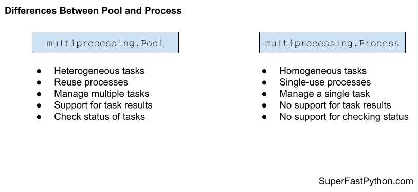

Multiprocessing Pool vs Process in Python
In this tutorial you will discover the difference between the multiprocessing pool and multiprocessing.Process and when to use each in your Python projects.
Let's get started.
What is a multiprocessing.Pool
The multiprocessing.pool.Pool class provides a process pool in Python.
Note, you can access the process pool class via the helpful alias multiprocessing.Pool.
It allows tasks to be submitted as functions to the process pool to be executed concurrently.
A process pool object which controls a pool of worker processes to which jobs can be submitted. It supports asynchronous results with timeouts and callbacks and has a parallel map implementation.
-- MULTIPROCESSING — PROCESS-BASED PARALLELISM
A process pool is a programming pattern for automatically managing a pool of worker processes.
The pool can provide a generic interface for executing ad hoc tasks with a variable number of arguments, much like the target property on the Process object, but does not require that we choose a process to run the task, start the process, or wait for the task to complete.
To use the process pool, we must first create and configure an instance of the class.
For example:
...
# create a process pool
pool = multiprocessing.pool.Pool(...)By default, the process pool will have one worker process for each logical CPU core in your system.
We can specify the number of workers to create via an argument to the class constructor.
For example:
...
# create a process pool with 4 workers
pool = multiprocessing.pool.Pool(4)Tasks are issued in the process pool by specifying a function to execute that may or may not have arguments and may or may not return a value.
We can issue one-off tasks to the process pool using functions such as apply() or we can apply the same function to an iterable of items using functions such as map().
For example:
...
# issues tasks for execution
for result in pool.map(task, items):
# ...
Tasks with multiple arguments are issued synchronously to the process pool using the starmap() function.
We can also issue tasks asynchronously to the process pool and receive a multiprocessing.AsyncResult in return, that provides a handle on the issued task or tasks.
Tasks can be issued asynchronously using the apply_async(), map_async(), and starmap_async().
For example:
...
# issues tasks for execution asynchronously
result = pool.map_async(task, items)
# ...
Once we have finished with the process pool, it can be closed and resources used by the pool can be released.
For example:
...
# close the process pool
pool.close()You can learn more about the process pool in the tutorial:
Now that we are familiar with Pool, let's take a look at Process.
What is a multiprocessing.Process
Python provides the ability to create and manage new processes via the multiprocessing.Process class.
Every Python program is executed in a Process, which is a new instance of the Python interpreter.
There are two main ways to use a Process; they are:
- Execute a target function.
- Extend the class and override run()
Execute a Target Function
To run a function in another process:
- Create an instance of the multiprocessing.Process class.
- Specify the name of the function via the “target” argument.
- Call the start() function.
First, we must create a new instance of the multiprocessing.Process class and specify the function we wish to execute in a new process via the “target” argument.
...
# create a process
process = multiprocessing.Process(target=task)The function executed in another process may have arguments in which case they can be specified as a tuple and passed to the “args” argument of the multiprocessing.Process class constructor or as a dictionary to the “kwargs” argument.
...
# create a process
process = multiprocessing.Process(target=task, args=(arg1, arg2))We can then start executing the process by calling the start() function.
The start() function will return immediately and the operating system will execute the function in a separate process as soon as it is able.
...
# run the new process
process.start()A new instance of the Python interrupter will be created and a new thread within the new process will be created to execute our target function.
You can learn more about running a function in a new process in the tutorial:
Extend the Class
The multiprocessing.Process class can be extended to run code in another process.
This can be achieved by first extending the class, just like any other Python class.
For example:
# custom process class
class CustomProcess(multiprocessing.Process):
# ...
Then the run() function of the multiprocessing.Process class must be overridden to contain the code that you wish to execute in another process.
For example:
# override the run function
def run(self):
# ...
Given that it is a custom class, you can define a constructor for the class and use it to pass in data that may be needed in the run() function, stored such as instance variables (attributes).
You can also define additional functions in the class to split up the work you may need to complete in another process.
You can learn more about extending the Process class in the tutorial:
Now that we are familiar with the multiprocessing.Pool and multiprocessing.Process, let's compare and contrast each.
Comparison of Pool vs Process
Now that we are familiar with the multiprocessing.Pool and multiprocessing.Process classes, let's review their similarities and differences.
Similarities Between Pool and Process
The Pool and Process classes are very similar, let's review some of the most important similarities.
They are:
- Both use Processes
- Both Can Run Ad Hoc Tasks
- Both Support Parallelism
Let's take a closer look at each in turn.
1. Both use Processes
Both the multiprocessing.Pool and multiprocessing.Process are based on Python processes.
Python supports real system-level or native processes. This means that Python processes are created using services provided by the underlying operating system.
Each process is an instance of the Python interpreter and executes just like it is a new program. Depending on the start method used, each child process may or may not inherit global variables from the parent process.
The multiprocessing.Process class is a representation of system processes supported by Python. The multiprocessing.Pool class makes use of Python processes internally and is a higher-level of abstraction.
2. Both Can Run Ad Hoc Tasks
Both the multiprocessing.Pool class and the multiprocessing.Process class can be used to execute ad hoc tasks.
The Pool class can execute ad hoc tasks via the apply() or map() functions. Whereas the Process class can execute ad hoc tasks via the "target" argument.
3. Both Support Parallelism
Both the multiprocessing.Pool class and the multiprocessing.Process classes support true parallelism in Python.
Unlike threads and thread pools, process-based concurrency allows tasks to be executed both concurrently (out of sequence) and in parallel (at the same time).
Executing tasks using the Pool or a Process allows a Python program to make use of multiple CPU cores in the system directly.
Differences Between Pool and Process
The multiprocessing.Pool and multiprocessing.Process are also quite different, let's review some of the most important differences.
They are:
- Heterogeneous vs. Homogeneous Tasks
- Reuse vs. Single Use
- Multiple Tasks vs. Single Task
Let's take a closer look at each in turn.
1. Heterogeneous vs. Homogeneous Tasks
The multiprocessing.Pool is generally used for heterogeneous tasks, whereas multiprocessing.Process is generally used for homogeneous tasks.
The Pool is designed to execute heterogeneous tasks, that is tasks that do not resemble each other. For example, each task submitted to the process pool may be a different target function.
The Process class is designed to execute homogeneous tasks. For example, if the Process class is extended, then it only supports a single task type defined by the custom class.
2. Reuse vs. Single Use
The multiprocessing.Pool supports reuse, whereas the multiprocessing.Process class is for single use.
The Pool class is designed to submit many ad hoc tasks at ad hoc times throughout the life of a program. The child worker processes in the pool remain active and ready to execute work until the pool is shutdown.
The Process class is designed for a single use. This is the case regardless of using the "target" argument or extending the class. Once the Process has executed the task, the object cannot be reused and a new instance must be created.
3. Multiple Tasks vs. Single Task
The multiprocessing.Pool supports multiple tasks, whereas the multiprocessing.Process class supports a single task.
The Pool is designed to submit and execute multiple tasks. For example, the map(), imap(), and starmap() functions are explicitly designed to perform multiple function calls in parallel.
Additionally, the map_async() and starmap_async() allow multiple tasks to be issued asynchronously, allowing the main program to continue on with other tasks while tasks are executed in parallel in the background.
The Process class is designed for executing a single task, either via the "target" argument or by extending the class. There are no built-in tools for managing multiple concurrent tasks; instead, such tools would have to be developed on a case-by-case basis.
Summary of Differences
It may help to summarize the differences between multiprocessing.Pool and multiprocessing.Process.
multiprocessing.Pool
- Heterogeneous tasks, not homogeneous tasks.
- Reuse processes, not single use.
- Manage multiple tasks, not single tasks.
- Support for task results, not fire-and-forget.
- Check status of tasks, not opaque.
multiprocessing.Process
- Homogeneous tasks, not heterogeneous tasks.
- Single-use processes, not multi-use processes.
- Manage a single task, not manage multiple tasks.
- No support for task results.
- No support for checking status.
The figure below provides a helpful side-by-side comparison of the key differences between Pool and Process.

How to Choose Pool or Process
When should you use multiprocessing.Pool and when should you use multiprocessing.Process, let's review some useful suggestions.
When to Use multiprocessing.Pool
Use the multiprocessing.Pool class when you need to execute many short- to modest-length tasks throughout the duration of your application.
Use the multiprocessing.Pool class when you need to execute tasks that may or may not take arguments and may or may not return a result once the tasks are complete.
Use the multiprocessing.Pool class when you need to execute different types of ad hoc tasks, such as calling different target task functions.
Use the multiprocessing.Pool class when the types of tasks of and timing of when you need to execute tasks varies at runtime.
Use the multiprocessing.Pool class when you need to be able to queue up a large number of tasks.
Use the multiprocessing.Pool class when you need to be able to check on the status of tasks during their execution.
Use the multiprocessing.Pool class when you need to take action based on the results of tasks, such as the first task to complete or results as they become available.
Don't Use multiprocessing.Pool When...
Don't use the multiprocessing.Pool for complex tasks that may be spread across multiple function calls. Instead, you may be better suited to extending the multiprocessing.Process class and encapsulating all the functions for the task.
Don't use the multiprocessing.Pool for tasks that require the management of a lot of state. Instead, you may be better suited to extending the multiprocessing.Process class and managing state as instance variables.
Don't use the multiprocessing.Pool for single one-off tasks. Instead, you may be better suited to using the multiprocessing.Process class with the "target" argument.
Don't use the multiprocessing.Pool for long-running tasks. You might be better suited to extending the multiprocessing.Process class and defining the long duration task.
When to Use the multiprocessing.Process
Use the multiprocessing.Process class when you have a single one-off task to execute via the "target" argument.
Use the multiprocessing.Process class for many similar tasks with different arguments that do not return a result, such as via the "target" argument or by multiple instances of a customized multiprocessing.Process class.
Use the multiprocessing.Process class when you have a lot of complex behavior spread across multiple functions and/or when you have a lot of state to be managed. In these cases, you can extend the multiprocessing.Process class and define your instance variables and task functions.
Use the multiprocessing.Process class for long-running tasks by extending the multiprocessing.Process class and treat the object as a service within your application.
Don't Use multiprocessing.Process When...
Don't use the multiprocessing.Process class for many different task types, e.g. different target functions. You are better off using the multiprocessing.Pool.
Don't use the multiprocessing.Process class when you require a result from tasks; you could achieve this by extending the Process class, although it's easier with the multiprocessing.Pool.
Don't use the multiprocessing.Process class when you need to execute and manage multiple tasks concurrently. This could be achieved with Process but would require developing the tools and infrastructure.
Don't use the multiprocessing.Process class when you are required to check on the status of tasks while they are executing; this can be achieved with AsyncResult objects returned when submitting tasks to the multiprocessing.Pool asynchronously.
Takeaways
You now know the difference between multiprocessing.Pool and multiprocessing.Process and when to use each.
If you enjoyed this tutorial, you will love my book: Python Multiprocessing Pool Jump-Start. It covers everything you need to master the topic with hands-on examples and clear explanations.